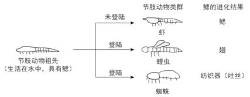

2018年北京市中考生物试题 · 选择题 第11、12、13、14、15题 · 对应解析
11. 下列获得新植株的方式不属于无性生殖的是
A. 小麦种子繁殖B. 苹果和梨嫁接
C. 马铃薯块茎繁殖D. 月季枝条扦插
【答案】A
【解析】
【分析】有性生殖是指经过两性生殖细胞（例如精子和卵细胞）的结合成为受精卵，再由受精卵发育成为新的个体的生殖方式；无性生殖的关键在于没有两性生殖细胞的结合，由母体直接产生新个体的方式，如嫁接、扦插、压条、克隆、组织培养等。
【详解】“苹果和梨嫁接”、“马铃薯用块茎繁殖”、“月季枝条扦插”，都没有经过两性生殖细胞的结合，因此都属于无性生殖；种子的胚是由受精卵发育形成的，因此，“小麦种子繁殖”属于有性生殖。
故选A。
12. 下列动物行为属于学习行为的是
A. 鹦鹉学舌B. 喜鹊筑巢C. 孔雀开屏D. 雄鸡报晓
【答案】A
【解析】
【详解】鹦鹉学舌是在先天性行为的基础上，通过生活经验和“学习”逐渐建立起来的一种新的行为活动，属于学习行为；喜鹊筑巢、孔雀开屏和雄鸡报晓都是动物的一种本能，由体内的遗传物质决定的，属于先天性行为。
点睛：动物行为分为先天性行为和学习行为。先天性行为是指动物一出生就有的一种行为方式，是动物的一种本能，由体内的遗传物质决定的；学习行为是动物出生后在成长的过程中通过环境因素的影响，通过生活经验和“学习”逐渐建立起来的，是在先天性行为的基础上建立的一种新的行为活动，也称为后天性行为。
13. 节肢动物鳃的进化如下图。下列叙述不正确的是

A. 鰓进化出的结构是不同的
B. 鰓的进化有利于适应生存环境
C. 鰓 进化与遗传、变异无关
进化与遗传、变异无关
D. 鰓的进化是自然选择的结果
【答案】C
【解析】
【详解】据图可见：鳃进化出的结构是不同的，A正确；据图可见：鳃的进化有利于不同动物适应不同的生存环境，B正确；生物的遗传变异和环境因素的共同作用，导致了生物鳃进化，C错误；生物进化的方向是由环境的定向选择决定的即自然选择的结果（适者生存）。D正确。
14. 下列防治流感的做法不正确的是
A. 患流感后一定要大量服用抗生素
B. 患流感后尽量少去公共场所
C. 患者在打喷嚏时应掩住口鼻
D. 注射流感疫苗有一定的预防作用
【答案】A
【解析】
【详解】流感是由病毒引起的，抗生素是用来治疗因病菌引起的疾病的药物，对于病毒性的疾病无疗效，A错误；流感具有传染性，患流感后尽量少去公共场所，B正确；患者在打喷嚏时应掩住口鼻，防止病毒的传染，C正确；注射流感疫苗有一定的预防作用，D正确。
15. 小林在学校的综合实践活动中制作下列食品时，利用的主要微生物不正确的是
A. 面包一酵母菌B. 酸奶一乳酸菌
C. 食醋一醋酸(杆)菌D. 泡菜—霉菌
【答案】D
【解析】
【详解】制馒头、做面包、酿酒等要用到酵母菌，A正确；制酸奶要用到乳酸菌，B正确；制醋要用到醋酸杆菌，C正确；制泡菜要用到乳酸菌，D错误。
第二部分非选择题